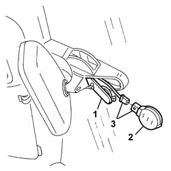

5050B64 rain sensor electronic unit r r
- Path
- Procedures > 50 AUXILIARY UNITS > 5050 SCREEN WASHERS AND HEADLAMP WASH/WIPE > 5050B windscreen wash/wipe > 5050B64 rain sensor electronic unit r r
- Kind
- repair procedure (removal / refitting; the operation number is the code)
- Applies to
- all engines; all production periods
- Interactive page
- https://sloeber94.github.io/elrnDB-a156/en/#/3238371
Applies to: all engines; production: da 03/02 a 09/03, da 10/03
 Removing
Removing
 Refitting
Refitting1. Working on the interior rear view mirror mounting, open the cover.
2. Move the rain sensor slightly.
3. Disconnect the electrical connection and recover the sensor.

Applies to: all engines; production: da 03/02 a 09/03, da 10/03
Refitting
RemovingHave a new rain sensor ready.
Thoroughly clean the inside of the windscreen by the sensor housing. Use a degreasing product.
Connect the sensor electrical connection.
Remove the protection from the jelly-like surface of the new sensor, then place it in position.
Close the lid.
Check the operation of the system using the Examiner or the other diagnostic equipment.